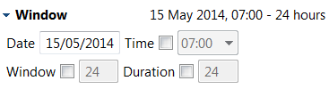

The Window section specifies the time window during which the given transaction is permitted to occur, with inputs being:
|
Date |
This gives the intended date for the transaction. |
|
Time |
This input allows you to specify a time of day (according to the local timezone at the port) for the transaction. The default setting is 07:00. |
|
Window |
This input allows you to specify the length of the available time window for the transaction (in hours). The default setting is 24hrs. |
|
Duration |
This input allows you to specify the maximum expected amount of time required to conduct the transaction (in hours). The default setting is 24hrs. |